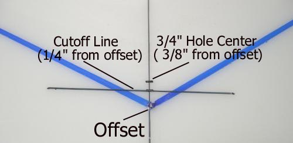
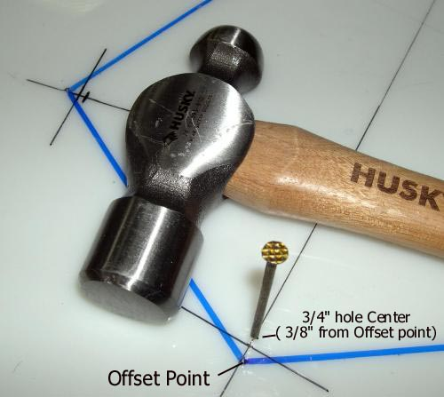

| Cross Sections | Menu Previous Page Next Page |
|  |
Stringer hole centers - Place a mark 3/8" inside of the offset points. This mark is on the line just drawn. This represents the center of the 3/4" stringer hole.
Stringer Hole cutoff - Draw a diagonal line 1/4" inside of the offset points. After drilling the stringer hole, cut the HDPE along the line. This cutoff is 1/8" past the centerline of the hole and allows the tubing to "snap" onto the cross section. |
|  |
Stringer hole centers - Use a hammer and nail to mark the 3/4" stringer hole center. This mark will make it easier to locate the hole center while drilling
The cutoff line needs to extend past the 3/4" hole so that it's position will be established. If not drawn now, it will be more difficult to establish it's location after the hole is drilled. |